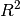

statsmodels.tsa.statespace.dynamic_factor.DynamicFactorResults.coefficients_of_determination¶
-
DynamicFactorResults.coefficients_of_determination()[source]¶ Coefficients of determination () from regressions of individual estimated factors on endogenous variables.
Returns: coefficients_of_determination : array
A k_endog x k_factors array, where coefficients_of_determination[i, j] represents the value from a regression of factor j and a constant on endogenous variable i.
See also
Notes
Although it can be difficult to interpret the estimated factor loadings and factors, it is often helpful to use the cofficients of determination from univariate regressions to assess the importance of each factor in explaining the variation in each endogenous variable.
In models with many variables and factors, this can sometimes lend interpretation to the factors (for example sometimes one factor will load primarily on real variables and another on nominal variables).